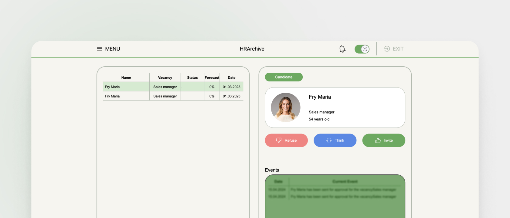
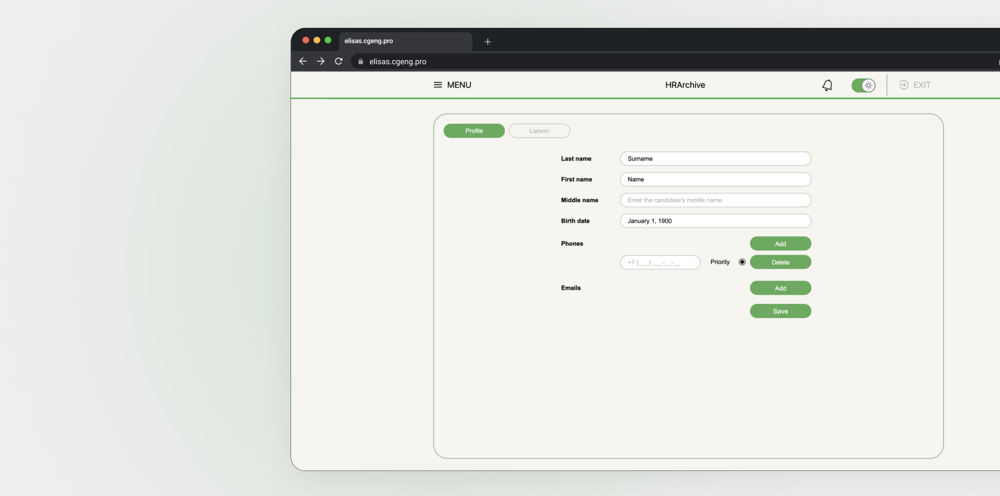
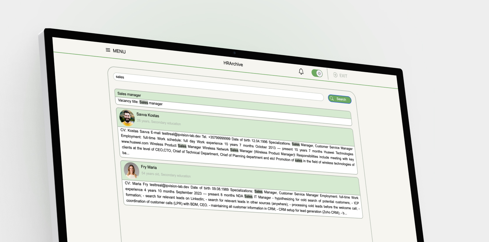

HRArchive
System of mass recruitment management, with the formation of an archive and issuance of recommendations by artificial intelligence
What is it?
HRArchive is a system that improves the quality of recruitment for small and medium-sized businesses.
Objectives:
- Improving the quality of staff selection.
- Risk assessment when making decisions on the candidate's suitability for a vacancy.
- Providing human resources staff with tools for recruiting information.
- Providing employers with reliable information candidates.
- Prompt communication between the candidate and the employer.
Purpose of HRArchive
- Optimize the employee search process.
- Processing and analyzing incoming information on candidates.
- Forming a conclusion on the candidate's compliance with the specified criteria.
- Processing candidate data from documents of various formats and obtaining candidate data from third-party online resources.
- Scheduling interviews and maintaining a calendar.
- Storing information on former and current employees for comparative analysis.
- Keeping a history - of interactions with the candidate, and company decisions on the candidate.
Functionality
- Company-wide database of candidates and job openings.
- Automatically check resume data for similarity with existing candidate data.
- Evaluating candidate fit with job requirements, by AI methods.
- Accounts with segregation by rights and roles.
- Calendar with notes on scheduled events.
- Global sourcing of data from the company's candidate and job database.
Interface
THE HRARCHIVE SYSTEM CONSISTS OF PAGES:
- Vacancies;
- Company vacancies;
- Candidates;
- Candidates for approval;
- Calendar;
- Settings;
- Global search.
Vacancies
The Jobs page provides a table of job openings, as well as a list of candidates who have responded to the selected job.
USER CAN:
- Add a new vacancy, it’s description. Add a new candidate or an existing candidate to the vacancy;
- Delete an existing vacancy
- Set up a filter to search for candidates in the system
- Write a comment about a candidate or an event
Сandidate communication
This tab allows the user to write a message to the candidate
- Schedule a telephone or in-person interview
- To invite to work or to refuse
Interview appointment
This tab allows the user to schedule an interview with the candidate for a selected date and time
- Reschedule the interview to another date or time
Company vacancies
The «Company vacancies» page contains the list of vacancies created by all employees, as well as the list of candidates who responded to the selected vacancy.
Otherwise, the page functionality is identical to that of the page «Job».
Candidates
The «Candidates» page contains a list of candidates stored in the database
ON THIS PAGE, THE USER CAN:
- Open the candidate's resume;
- Leave a comment about a candidate or event;
- Edit the candidate's details;
- Download the candidate's resume;
- Bind the candidate to the vacancy.
Candidates for approval
The page «Candidates for approval» contains the list of candidates that have been sent for approval.
On this page allows you to invite the selected candidate for an interview, reject him or send the candidate to the “Think” status.
Calendar
The «Calendar» page is used to display past and upcoming events.
Settings
The «Settings» page allows you to change, if necessary, the profile data of the employee performing work on the current user.
Global search
The «Global Search» page is designed to display search results for the entire system.
Notifications and event feed
This tab allows the user to familiarize themselves with new events:
- New response
- Candidate for concurrence
- Scheduled or rescheduled interview
Theme change
The system implements the ability to change from a light theme to a dark theme